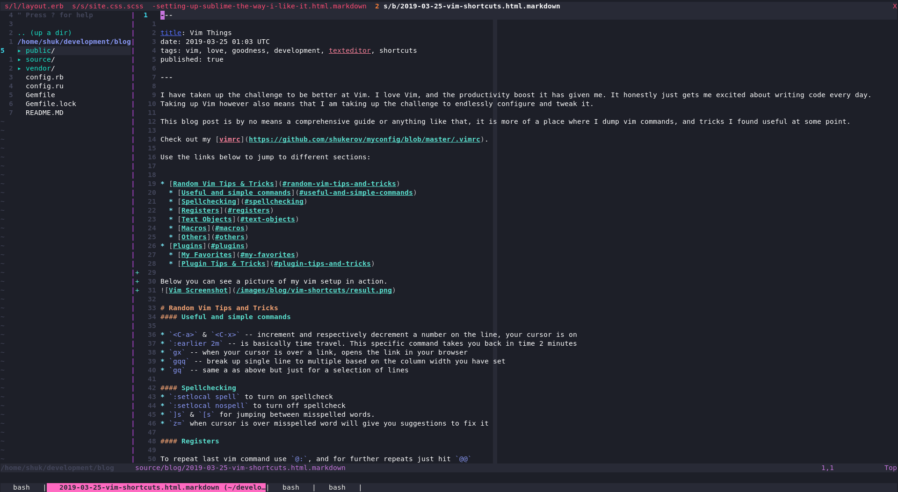

I have taken up the challenge to be better at Vim. I love Vim, and the productivity boost it has given me. It honestly just gets me excited about writing code every day. Taking up Vim however also means that I am taking up the challenge to endlessly configure and tweak it.
This blog post is by no means a comprehensive guide or anything like that, it is more of a place where I dump vim commands, and tricks I found useful at some point.
Check out my vimrc.
Use the links below to jump to different sections:
Below you can see a picture of my vim setup in action. 
Random Vim Tips and Tricks
Useful and simple commands
<C-a>&<C-x>– increment and respectively decrement a number on the line, your cursor is on:earlier 2m– is basically time travel. This specific command takes you back in time 2 minutesgx– when your cursor is over a link, opens the link in your browsergqq– break up single line to multiple based on the column width you have setgq– same a as above but just for a selection of lines
Spellchecking
:setlocal spellto turn on spellcheck:setlocal nospellto turn off spellcheck]s&[sfor jumping between misspelled words.z=when cursor is over misspelled word will give you suggestions to fix it
Registers
To repeat last vim command use @:, and for further repeats just hit @@
How does that work? Well in vim @ just accesses a vim register. In the case above the column register is called.
To view the contents of your registers type :reg.
Text objects
Text objects are an awesome way to manipulate text. Combine them with the usual commands.
You can find some more information on text objects by typing :h text-objects.
iw– inner wordaw– a word (includes a space)ip– inner paragraphap– a paragraph (includes an empty line)i<) ' " } * >– inner parenthesis, single quote, double quote or braceit, at– inner tag, a tag (includes the open and closing tag)
Macros
Are awesome. Getting them wrong is not awesome. Here is a quick list showing how to edit your VIM macro.
- Type
:let @a=' - Press
Ctrl-RCtrl-Ra to insert the current contents of register a (typeCtrl-Rtwice to insert the register exactly). - Edit the text as required.
- Append an apostrophe (‘) to finish the command, and press
Enter. - Enter
:reg ato view the new value in the register. - Type
@ato execute the contents of registera.
Others
Want to unwrap some html? Check out this handy regex:
:s/<[^>]*>/\r&\r/g
:g/^$/d
Select everything and hit = to autoindent it.
Plugins
I am not a vim purist. I manage plugins with Vundle. Here are the most useful ones (for a full list check vimrc):
My Favorites
ctrlp– lets you search and open files easily with fuzzy findtraces.vim– highlights search and replace as you govim-highlightedyank– highlights when you yank something, a must havevim-esearch– lets you search through entire project. It also does search and replace in a “sublime-like” fashioncomittia.vim– if you have vim set up as your default text editor for git, this will give you an awesome splitnerdtree– a very nice side menu, that shows directory trees. I toggle it with<leader>kb, so it doesn’t take screen space while I codecoc– is an intellisense engine for Vim
Plugin Tips and Tricks
Some useful tricks, specific to plugins.
CtrlP
Allows you to open multiple files. Search with <C-p> as usual.
Then you can use <C-z> to mark files. Once marked press <C-o> to open them all.
NerdTree
Creating a new file and it doesn’t pop up in NerdTree?
Can be annoying, but all I have to do is press r over the directory where you expect you file.
The NerdTree directory will refresh, showing you your 'lost’ file!
VimEsearch
<leader> ff– starts your searchs&t– opens a file in a new tab, or a split buffer respectivelyESubstitute/word-to-replace/replacement-word/gc– will search and replace across multiple files after search.